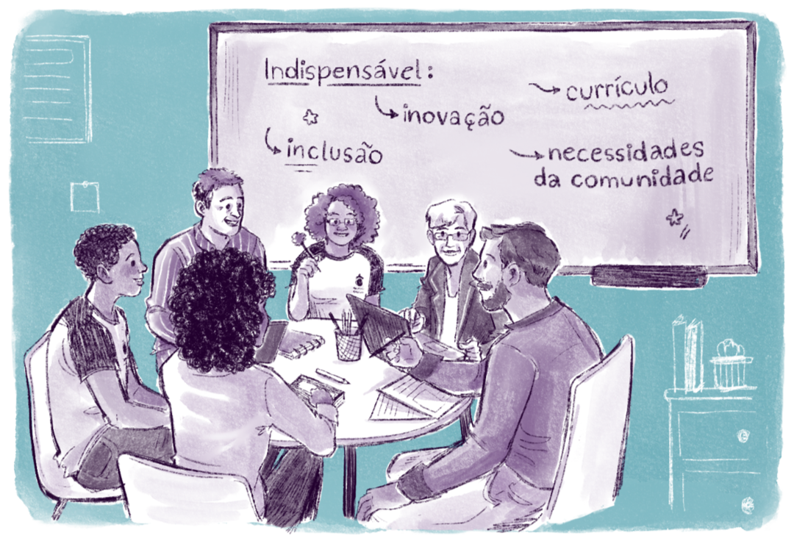

Uma Perspectiva sobre a Rede Federal, PROEJA e EJA/EPT
Basta um olhar mais atento nos acervos de Projetos Pedagógicos de Curso (PPCs) das unidades da Rede Federal para notar a predominância do, como resultado da versão final de um PPC, bem como proposições contra-hegemônicas muito tímidas ou inexistentes.
Não raro temos na Rede Federal, por exemplo, cursos com baixíssima demanda, com altos índices de evasão e retenção ou que acabam fechando logo que iniciam. De certo modo, isso expressa as falhas de planejamento, o estudo de demandas deficitárias e o não reconhecimento de questões antropológicas já citadas aqui (como o êxodo rural, a ausência de sucessão rural, a urbanização do ensino etc). Falta, ainda, uma leitura mais acurada sobre a realidade, o entorno da instituição e o sentido e o papel da gestão democrática na operacionalização de decisões mais democráticas e menos movidas pelo senso comum.
Assim, a gestão democrática precisa estar presente em dois movimentos importantes:
- Assegurar que a motivação por trás da escolha por um determinado curso, em qualquer uma de nossas unidades, seja a expressão do interesse efetivo da comunidade em geral e que não se trate de uma decisão monocrática, quer seja de um grupo de gestão ou de professores que queira um curso para chamar de seu.
- Assegurar que, após uma decisão coletiva pela abertura de um determinado curso, amparada em estudos sólidos sobre as necessidades reais daquele contexto, os documentos basilares de implementação e consolidação sejam democraticamente a demarcação de uma construção e reflexão coletiva.
Eles devem obedecer a um rigoroso planejamento coletivo que envolva todos os atores do processo, com construção e revisão documental contínua. Sem esse movimento, o gerencialismo alienante e alienador pode determinar as decisões, sejam elas simples ou complexas, e isso, numa organização de Ensino em Educação Profissional e Tecnológica (EPT), acaba por inviabilizar a construção de uma perspectiva ético-política da educação omnilateral. Sem isso, o currículo integrado, por exemplo, torna-se uma expressão meramente burocrática e alheia à sua finalidade e razão de ser, cenário em que os meios passam a ser fins, e os fins acabam sendo negligenciados.

Título: A Gestão Democrática na criação de um curso
Fonte: Prosa (2025c).
Basta um olhar atento ao Programa Nacional de Integração da Educação Profissional com a Educação Básica na Modalidade de Educação de Jovens e Adultos (PROEJA), tomado aqui como exemplo, no qual verificamos que o cuidado e o investimento com a Educação de Jovens e Adultos não deve ser uma decisão compulsória pela lei da criação dos Institutos Federais. Reduzir a Educação de Jovens e Adultos (EJA/EPT) à mera determinação legal – algo que temos que oferecer porque a lei exige os dez por cento de matrículas – é negligenciar a possibilidade de inclusão e oportunidade a pessoas que, por diversas razões, não tiveram condições de estudar na idade certa.
A EJA/EPT deve ser tratada para além da obrigação legal e tornar-se uma convicção e uma pauta prioritária, considerando a sua natureza inclusiva e de promoção da cidadania pelo acesso ao conhecimento. Diante disso, precisamos buscar, democraticamente, uma outra fase: de consolidação da política pública. Nosso compromisso é transformar, com nossas decisões e ações, o Programa de Educação de Jovens e Adultos numa ação efetiva do governo do Estado brasileiro, a fim de superarmos o estigma do legalismo e construirmos novas perspectivas e oportunidades para aqueles e aquelas que mais precisam. Nesse segmento, é importante acentuar a necessidade de que os cursos e suas diretrizes sejam organizados de acordo com a demanda desse público particular, e não de acordo com as convicções de quem escolhe o curso. A metodologia, a organização administrativa e pedagógica, o viés ético-político e as motivações de um curso devem atender às reais necessidades das pessoas e do contexto em que estão inseridas, em vez de se limitarem a cumprir apenas os requisitos mínimos estabelecidos pela lei de criação da Rede Federal.
Da mesma forma, outros temas como a verticalização e a escolha por eixos tecnológicos e por cursos de graduação, sejam tecnólogos, bacharelados ou licenciaturas, precisam ser pensados e instituídos para atender as demandas da sociedade, do contexto local e regional.
É fundamental que cada curso, independentemente do nível ou modalidade, seja estratégia de formação omnilateral e não dual, ensino integral e não formação rasa, formação dialética e não para operar a dialética. Que seja um movimento intelectual de constituição do trabalho como princípio educativo e da pesquisa como pressuposto pedagógico (Gramsci, 2000; 2001; 2002; 2004).
O modo mais seguro para que a gestão em EPT seja democrática e cumpra efetivamente o seu papel, considerando a sua finalidade, se dá através da produção de documentos institucionais em diálogo com todas as instâncias e segmentos, para que o resultado desse movimento seja a expressão de todos, mesmo no caso do dissenso, da controvérsia e do tensionamento retórico.
A riqueza acadêmica de uma instituição democrática, verdadeiramente falando, não é um consenso a priori ou um alinhamento monocrático, algo denominado por muitos como articulação política, que impõe, sob esse pretexto, a vontade de um ou de um grupo sobre as demais vontades. Isso não é articulação e sequer pode ser denominada política: trata-se de um autoritarismo totalitário disfarçado de decisão democrática. Muitos acordos espúrios, e mesmo a corrupção ativa e passiva, decorrem desta visão distorcida de que as instituições precisam ser espaço de governo de imposição de vontades, não alinhadas ao propósito do bem comum. Nesses casos, quem está em instância decisória impõe aos demais os seus devaneios, convicções, contradições e oligarquismo sob a égide e a batuta da famigerada e abominável “articulação política” (Gramsci, 2000; 2001; 2002;2004).
A produção documental de uma instituição de EPT não deve ser apenas a expressão da maioria, mas a contemplação de um melhor arranjo, fruto de todos os dissensos, contrapontos, reflexões e análises. O que de fato importa não é a apresentação de um texto belo, coeso, lógico e coerente – porque isso é prerrogativa da exigência formal. O documento institucional deve estampar o dialogomai, isto é, o encontro proativo das muitas falas e contextos com um único pretexto: apresentar as muitas intencionalidades em uma só. Como defendia Aristóteles em Retórica (2019), a lei é o olhar de muitos olhos, é a racionalidade advinda de muitas razões.
Nessa lógica, a garantia de que um documento institucional seja efetivamente democrático não reside apenas na sua metodologia de produção. Todas as categorias, sejam docentes, técnicos administrativos, estudantes ou segmentos institucionais, devem se sentir ali representadas, não apenas como uma parede composta por muitas tábuas ou tijolos, e sim como o amálgama ou o ponto de convergência que une tudo. Deve-se representar todos na expressão de uma intenção coletiva, de uma realidade bem refletida e de decisões exaustivamente bem dialogadas.
Se ampliarmos a lente com um olhar mais crítico sobre os documentos institucionais como um todo, precisamos partir da premissa de que eles precisam e devem ser resultados acurados de um trabalho exaustivo, coletivo, crítico e criativo (Morin, 1990; 2000; 2004; 2014). Sabemos que muitas vezes quem está na gestão pode impingir certa influência ou tendência nas diretrizes documentais, mas essa ingerência, se não for democrática, pode ser altamente nefasta para a instituição como um todo. Isso porque, nos escritos, nas resoluções, nas portarias, nas normas e orientações, a identidade documental de uma unidade da Rede Federal deve zelar pelo sentido mais acurado da atividade-fim desta instituição, e não apenas ser uma expressão de quem ocupa naquele instante a gestão. Veja no infográfico a seguir as categorias a serem representadas na criação de um documento institucional:
.png)
Título: Categorias a serem representadas na criação de um documento institucional
Fonte: Prosa (2025d).
Se construímos, por exemplo, um PPC de curso como se fosse uma colcha de retalhos, tendo como premissa o movimento cartesiano de cisão entre a realidade e o conhecimento, separando os saberes, deixando-os desconexos e sem um diálogo mínimo entre os componentes curriculares, mesmo que seja por área do conhecimento, a chance de cumprirmos a missão do e no currículo integrado é pouco provável. Para que possamos efetivamente exercer o nosso papel humano e social, enquanto EPT, necessitamos de um pensamento com uma cabeça bem-feita (Morin, 1990; 2000; 2004; 2014), que prime pela visão inter, multi e transdisciplinar, engendrando a operacionalização entre a teoria e a práxis e visando a formação omnilateral e politécnica.
Um exemplo que pode ilustrar essa problematização é que um Instituto Federal, levando em conta a organização da gestão central (Reitoria e Pró-Reitorias) e a gestão das unidades ou campi (Diretores Gerais) que irão compor o Colégio de Dirigentes (CODIR) possuem um papel preponderante na missão de expandir a democratização das decisões que beneficiam a instituição como um todo. Como já mencionado nos capítulos anteriores, esses espaços não podem se transformar em um ambiente estratégico de imposição das pautas, urgências e decisões da gestão central, tampouco podem ser mecanismos de poder das unidades para determinar as prioridades da instituição como um todo. Ambos os cargos aqui citados, no caso do CODIR, devem estar a serviço do interesse maior da instituição, isto é, da promoção da EPT e da formação omnilateral, considerando o trabalho como princípio educativo e a pesquisa como pressuposto pedagógico (Gramsci, 2000; 2001; 2002; 2004).
Assim, o Conselho Superior (CONSUP) não é e nem deve ser pensado como espaço para estabelecer as convicções políticas e prioridades de um reitor ou grupo gestor. Ele é o espaço de fiscalização e de reafirmação das garantias democráticas, visto que nele estão representadas todas as categorias de uma Instituição, sem perder de vista a atividade-fim. Embora parte dos membros sejam os mesmos do Colégio de Dirigentes (reitores, pró-reitores e diretores gerais), o CONSUP não pode ser a extensão do CODIR, isso porque, sendo deliberativo, esse conselho precisa considerar as demandas reais e latentes da instituição como um todo, não apenas do grupo que faz a gestão institucional, para que os documentos e normativas institucionais possam atender as demandas reais, sobretudo as que versam sobre o acesso, a permanência e o êxito dos discentes.
O CONSUP não pode ser mero resultado decisório do CODIR, do espelhamento das decisões tomadas neste âmbito. Por ser deliberativo, o CONSUP tem o dever de produzir decisões e documentos que contemplem a representatividade de todas as categorias e o interesse maior da instituição como um todo.
Pode ocorrer, em muitas unidades da Rede Federal, um desvio de finalidade da gestão como projeto de poder e não como estratégia de projeto institucional para que a EPT efetivamente cumpra o seu papel. Lembrando que para Hannah Arendt (2005) a democracia só se fortalece e dá frutos quando ocupamos os espaços públicos e políticos, com o intuito de fortalecer as decisões que se afastam do totalitarismo e da satisfação do interesse imediato de quem está no poder. Para Arendt (2005), é o descuido com a ação, com a vida pública, com o exercício educativo da política e com a dimensão pedagógica do agir humano que aos poucos ocorre a alienação, o descaso e o desvio de finalidade por parte de quem exerce o poder (Machado, 2023).
As tentações de que o CONSUP seja o espelhamento do CODIR em termos decisórios de que as decisões institucionais sejam a expressão da vontade de quem está em cargos decisórios e não das reais demandas da comunidade acadêmica, precisam e podem ser superadas quando há formação para o livre exercício da cidadania (Nussbaum, 2010). Diferentemente da visão tecnicista, que apresenta as competências e habilidades na formação técnica de maneira alienante com a instrumentalização das pessoas para um determinado fim, as competências e habilidades que precisamos aprender para fortalecer a democracia estão no campo discursivo, dialogal e formativo, cultivadas a partir de uma visão crítica e criativa contra-hegemônica (Gramsci, 2000; 2001; 2002; 2004).
Para refletir: modelo próprio de gestão para a EPT
O gerencialismo não raro é alienante e alienado, por isso, é crucial desenvolver um modelo próprio de gestão para a EPT. Isso exige investimento em leitura, formação, capacitação epistemológica, formação pedagógica, reflexão e revisão metodológica, conduta ética e, em suma, formação política. Tudo para que as decisões institucionais expressem e registrem, nos documentos que irão balizar as decisões e as ações, a expressão da vontade democrática, e não um produto do gerencialismo alienado (Machado, 2023).
Convidamos você para refletir sobre o conteúdo aplicado à sua realidade, portanto, ao ler e responder as questões, tenha como ponto de partida a instituição na qual você atua:
- Como superar o gerencialismo administrativo em nossas instituições de EPT?
- Quais estratégias podemos adotar para que a abertura de novos cursos atenda à sua finalidade e não tenhamos tantas situações de cursos com baixa ou inexistente procura?
- Que medidas podemos e devemos aderir para democratizar tanto as nossas decisões institucionais como a nossa produção e gestão documental?